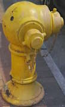
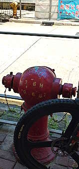
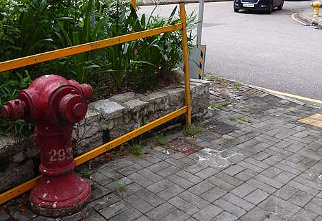
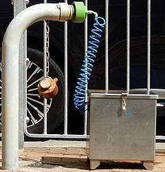
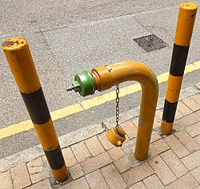
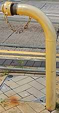
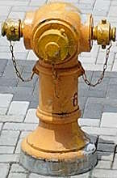

Busting the myth about seawater hydrants being phased out and becoming rare
[Sources for this page]Sources for this page
- Google | Google Maps (Street View) | https://www.google.com/maps/
- Water Supplies Department (HKSAR Government), revised on Y2025-M12-D17 | Seawater for Flushing | https://www.wsd.gov.hk/en/core-businesses/water-resources/seawater-for-flushing/
What the slop say
It wouldn't be hard to find slop that wants to convince you that seawater hydrants (the yellow ones) are probably going to be phased out because they rust, and there is no need for them anymore now that fresh water supply is stable, and that you wouldn't see them away from the coast. They also want you to believe that seawater hydrants are "becoming rarer" for all these reasons. How true are these claims?
You can't find seawater hydrants inland?
If you don't live near the coast, you might be far away from the sea, but you are not necessarily far away from seawater pipes underground. Let's say you live somewhere in Kowloon Tong, that don't seem close to any sea (relatively speaking, in Hong Kong), but seawater supply does cover Kowloon Tong, and there are yellow Round Heads in Kowloon Tong. Seawater toilets flushing covered around 85% of the population in Hong Kong afterall (2015 data, not sure how much the percentage has changed since), so in theory 85% of the population wouldn't have trouble finding yellow hydrants (at least that was the case in 2015). Well, the "yellow hydrants are rare" statement might have some merit in places like the North District, where an alternative is being introduced for toilet flushing: reclaimed water (with its own hydrant-related myth), but if you live in other areas in Hong Kong then it is likely that it wouldn't be hard to find yellow hydrants. Personal tip: if you see red hydrants along one side of a street, try to look for yellow hydrants on the other side. In some cases, red and yellow hydrants may be installed close to each other.
 |
| yellow Round Head 7955 |
| 1 Devon Road, Kowloon Tong |
| Photo taken in Y2026-M03 |
 |
| red Round Head 27206, yellow Round Head 27582 (previously 1844) on the other side of the street |
| Tung Kun Street at Reclamation Street |
| Photo taken in Y2026-M05 |
 |
| red Round head 2933, yellow Round Head 3164 on the other side of the street |
| Wang Tung Street × Wang Kwong Road |
| Photo taken in Y2026-M08 |
Some seawater hydrants that seem relatively new
I managed to find two yellow Swan Necks in Causeway Bay that were installed at some point between Y2020-M11 and Y2022-M05, and Y2021-M02 and Y2022-M05 respectively. There weren't any hydrants at those locations in the past according to Google Maps street view. Interestingly, these "new" yellow Swan Necks never seemed to have gotten any markings - no numbers and no arrows. In fact, the Swan Neck on Sharp Street East near Canal Road East was connected to the hydraulic test box in every Google Maps street view capture ever since its installation, and you can also see its paint slowly fading away. I wonder if they just kept hydraulic testing that hydrant for four years. The other Swan Neck on Leighton Road in front of Leigyinn Building is equally weird, it can also be seen being hydraulic tested in every Google Map street view capture, and there are two short poles flanking it. The hydraulic test box was removed (or maybe stolen?) at some point between Y2024-M01 and Y2025-M05, but the green hydraulic test cap remain attached to the hydrant. Unlike the standard Type I and II outlet nozzle caps (which have handles), I believe this type of test cap requires a wrench to open because it has no handles and only a nut.
Another example is a yellow Round Head (which appears to be numbered 2246 according to Google Maps street view) at a taxi stand near the Yi Tung Road roundabout. I believe 2246 was installed either as part of the construction of Yu Nga Court or the project on the other side of Yi Tung Road which is still under construction in 2026. Yu Nga Court was completed in 2022, and the earliest Google Map street view of 2246's location was in Y2022-M02.
 |
| yellow Swan Neck with green hydraulic test cap, but its yellow paint faded away completely |
| Canal Road East near Sharp Street E |
| Photo taken in Y2026-M04 |
 |
| yellow Swan Neck with green hydraulic test cap but the hydraulic test box is not present |
| Leighton Road at Leigyinn Building |
| Photo taken in Y2026-M04 |
 |
| An unnumbered yellow Swan Neck |
| Pitt Street at Waterloo Road |
| Photo taken in Y2026-M06 |
 |
| yellow Round Head 2246 (?) (not shown in GeoInfo Map) |
| Yi Tung Road taxi stand opposite of Yu Nga Court bus stop |
| Photo taken in Y2026-M08 |
You might say, "hey thats half a decade ago!" But still, the slop we see often gives us the impression of yellow hydrants being a product of the past when water rationing was still a thing. That obviously isn't the case, as yellow hydrants are still being installed in the 2020s. I am not saying those slop are wrong in saying seawater hydrants rust and might be phased out, I am just saying that "seawater hydrants might be expensive to maintain due to rust issue and might be phased out in the future, but that don't seem to be happening now".